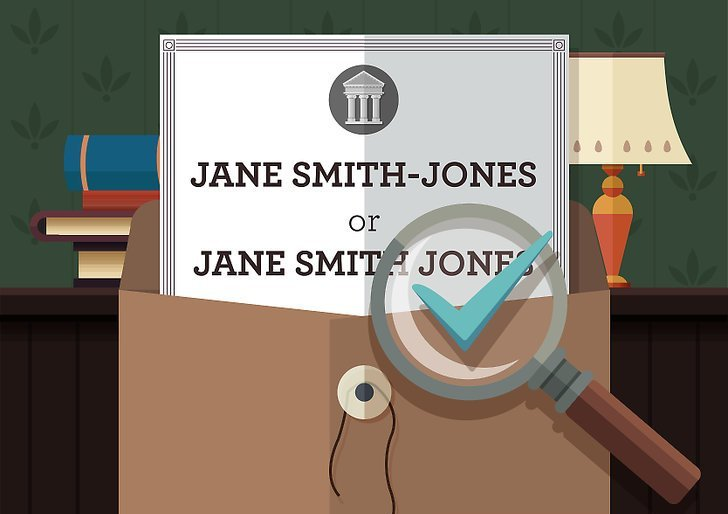

chapter13.1--handout
Background Information
Double-barrelled name 英文里的复姓
"Good old Harris."
"I say. You know my name isn't really Harris. It's Wilson Harris. All one name. With a hyphen, you know."
“哈里斯，老伙计。”
“咳。你们知道我的姓氏实际上并不是哈里斯。是威尔逊-哈里斯。是个复姓。中间有个连字号，你们知道的吧。”
Harris在这里一本正经地解释自己的姓是个复姓，中间还有连字符（"-"）, 所以一定得连起来一起读（"Wilson-Harris"）. 复姓在英文里叫作Double name或Double-barrelled name（double-barrelled表示“双重的，有两部分的”），当然还有更直接的表示：Hyphenated name（加了连字符的姓）。

在英国，复姓一般是在家族中一代代继承下来的（heritable）. 有少数上层贵族还有三重姓（triple-barrelled）, 更罕有的还有四重姓（quintuple-barrelled）.
但拥有多重姓的并不一定都是贵族（of the peerage），也有可能是出身于地主阶级（landed gentry），这种时候取复姓的目的一般是为了巩固属于这个家族的地产和财富（to consolidate the estates and wealth of the family）.
当然姓氏太长使用起来会很不方便，所以后来也有很多人在日常中会把自己的多重姓缩写为两重，或者甚至只剩一个（abbreviated in everyday use to a single or double-barrelled version）.
除了家族继承，在某些情况下也会有人特意把自己的姓变成复姓。比如按照西方的传统，结婚后女方需要决定是否保留自己的姓氏，还是随夫姓。但也有人选择保留自己的娘家姓（maiden name）, 同时再用“-”把夫家的姓加在后面。这对既想保留自己的姓氏，又想表明自己已婚身份的女士来说可以算是两全其美了。
Vocabulary
forward
vt. 发送，寄（to send or pass goods or information to sb）
（按新地址）转寄，转投，转交（to send a letter, etc. received at the address a person used to live at to their new address）
原文： It had been forwarded from Pamplona.
这封信是从潘普洛纳转来的。
💧forward 在这里是指“转寄”，另外它还可以表示“寄送”，尤其是向客户提交某些信息或目录时，比如：We will be forwarding you our new catalogue next week.
我们将于下星期给你寄上新的商品目录。
utilize
vt. 使用；利用；运用；应用（to use sth or to put sth into service）
原文："I say," said Harris, "let's utilize it."
“我说，”哈里斯说，“咱们去享用一下吧。”
💧utilize 其实就相当于make use of, 并且一般以实际利益为目的。比如：The resources at our disposal could have been better utilized.
我们所掌握的资源本来可以利用得更好，获得更高的效益。
Crush Your Problems

Brett passed out on the train, so brought her here for 3 days rest with old friends of ours.
勃莱特在火车上昏倒了，所以我带她到我们的老朋友这里来休息三天。
💧表达精讲
pass out 表示“昏倒”（to faint or lose consciousness）, 比如：He felt sick and dizzy and then passed out.（他感觉恶心，眩晕，接着就昏倒了。）
这里也可能是指Brett醉倒了（经常发生在她身上的事）。


"What a lousy telegram!" I said. "He could send ten words for the same price. 'I come Thursday'. That gives you a lot of dope, doesn't it?"
“一封糟不堪言的电报！”我说。“他花同样的钱可以打十个词嘛。‘我星期四到’。好像这里面真有不少内幕消息可瞧的，是不是？”
💧表达精讲
dope 在这里表示“（关于某人/某事的）内幕消息”（private information about someone or something）. 比如：What’s the dope on the new guy?（有什么关于这个新来的家伙的内部消息？）
Jake在这里讽刺Cohn发一封电报如此惜墨如金，好像有什么不可告人的内幕似的。

"It gives you all the dope that's of interest to Cohn."
“凡是科恩在乎的都表达出来了。”
💧表达精讲
sth of interest to sb 也就是“某物/事对某人来说有意义 、很重要”，sth of interest在这里也可以理解为matter of consequence (importance).
Bill接着Jake的话调侃Cohn，言下之意是“他关心的只有‘自己周四到’这件事”。

He had taken up utilizing from Bill.
“享用”这个词他就是从比尔那儿学来的。
💧表达精讲
take up 的含义非常丰富，比如最简单的take up sth “提起，拿起某物”，take up doing sth “继续做某事（在暂停之后）”（to continue with sth after an interruption）;
这里的take up 表示“吸收，学习（新的东西）”（to adopt something new）, 比如：I see you've taken a new lifestyle up.（我看到你展开了新的生活方式。）

"Yes. You couldn't tell how English would mix with each other, anyway."
“是啊。反正你很难说英国人彼此之间是怎么相处的。”
💧表达精讲
mix with sb 表示“（和不熟悉的人）相处，交往”，也就是我们平时说的“社交”（to socialize）. mix well with sb 就是指“相处得很来，很合拍”，比如：Charlie doesn’t mix well with the other children.（查利与其他孩子合不来。）
Content Analysis
Jake和Bill为了和Mike以及Brett在潘普洛纳会合，立马决定要起身回程。但跟他们才相处了短短5天的另一位英国人Harris却对他们非常不舍。这里再次出现了海明威在这本小说中一直反复强调的主题，也就是男性之间的友谊，尤其是一战的退伍士兵之间的——
💧Clue 1: Male freiendship, especially that is between combat veterans, is celebrated.
Evidence 1: Harris was a little tight.
"I say. Really you don't know how much it means. I've not had much fun since the war."
哈里斯有点醉了。
“我说，你们真不知道对我的意义有多大。大战结束以来我就没过过几天开心日子。”
Evidence 2: "No, no!" he said. He was climbing down from the bus. "They're not first-rate flies at all. I only thought if you fished them some time it might remind you of what a good time we had."
“别，别！”他说。他正从汽车上往下爬。“根本算不上头等的假蝇钓钩。我只希望尼恩有朝一日拿它来钓鱼的时候，能想起咱们一起度过的这段快乐的时光。”
Harris透露了自己也是参加完一战回来的，并且一直都生活得闷闷不乐，直到遇上Jake和Bill，他们三个都有相似的经历，所以彼此之间也更加有共鸣和联结感。这种在战场上发展出来的“兄弟情谊”可以说在一定程度上帮助了他们重返平凡的现实生活时，能获得情感的支撑和安慰。
比如在之前的章节里，Bill也向Jake表达了他的这层感情："Listen. You're a hell of a good guy, and I'm fonder of you than anybody on earth."（“听着，你是个大好人，我喜欢你，胜过世界上任何一个人。”）虽然他又紧接着打趣说如果放在纽约，自己这么说就会被当成同性恋者了（" I couldn't tell you that in New York. It'd mean I was a faggot."）也可以理解为这暗示了这种友谊同时兼具深刻性和复杂性，很多时候是难以衡量并把握的（参考海明威自身的经历，他也有不少和男性之间的友谊）。
在今天内容的结尾部分，还有一段关于潘普洛纳的旅馆老板Montoya的描写，读起来含义似乎非常暧昧不明。其中提到了一个很有意思的概念——outsider（局外人），如果我们仔细回想，就会发现这本小说当中的人物都或多或少地会有意和彼此之间发展一种秘密关系——
💧Clue 2: The tendency of building secretive relationship.
Evidence 1: We went into the hotel and on the stairs I met Montoya. He shook hands with us, smiling in his embarrassed way.
在楼梯上我碰到蒙托亚。他同我们握手，面带他那惯常的扭捏表情微笑着。
Evidence 2: He always smiled as though there were something lewd about the secret to outsiders, but that it was something that we understood. It would not do to expose it to people who would not understand.
他总是笑眯眯的，似乎对外人来说，这秘密是桩不可告人的丑事，但是我们却心照不宣。这秘密是不便于在不懂得其中奥妙的人面前公开的。
Jake觉得自己和Montoya有一种亲密感，仿佛他们之间的交流都是秘密性的（secretive）, 而且不能够和别人分享，也就是“排外的”（exclusive）. 这种情感和关系在某种程度上也反映了在当时整个时代环境之下，人和人之间的信任感是很低的，并且距离疏远，充斥着冷漠，所以这种关系更能带来安全感和心理上的安慰——也就是只跟和自己相似或是有特定感觉的人亲近。
Today's Bonus
💧English Idioms from Bible 来自《圣经》的英语习语（下）
昨天我们分享的是从《圣经》的人物故事延伸而来的习语，但其实还有相当一部分习语是直接从《圣经》里的原话演变过来的，今天的彩蛋我们再一起来看一看~
1. the apple of one’s eye 掌上明珠
这个出现在《圣经·旧约》的诗篇（Psalms）里：“求你保护我，如同保护眼睛中的瞳孔。”（Keep me as the apple of the eye.）以前的人因为瞳孔（pupil）和苹果的形状很相似而称之为apple. 这句话原本是向上帝的祷告，现在它被用来比喻“很珍贵的人或物，掌上明珠”（special favorite, beloved person or thing）. 比如：
She is the apple of her parents’ eye, but she is not spoiled.
她是父母的掌上明珠，但并没被宠坏。
2. all things to all men 对什么样的人，就做什么样的人
在《圣经·新约》的哥林多前书（Corinthians）里有使徒保罗说：“对什么样的人，我就做什么样的人，这样我就能尽一切办法拯救他们中的一些人。”（So I become all things to all men, that I may save some of them by whatever means possible.）
现在这一习语的意思是“八面玲珑，力图讨好所有的人”（to be liked or appreciated by everyone, usually through overt efforts to please them）. 比如：
The President’s attempts to be all things to all men had disastrous consequences.
总统企图讨好各方的做法招致了灾难性的后果。
You can’t be all things to all men. Just make up your mind.
你不可能让所有人都高兴，做出自己的决定吧。
3. broken reed 折断的芦草
这一习语源出《圣经·旧约》以赛亚书（Isaiah）：“压伤的芦草不折断，冒烟的亚麻不熄火。”（A bruised reed shall he not break, and the smoking flax shall he not quench.）原文里是赞美上帝的慈爱，但broken reed现在的意思是指“靠不住的人”（an unreliable or unsupportive person）, 比如：
He let me down at the last minute and turned out to be a broken reed．
他在紧急关头拆了我的台，成了背信弃义的人。
Don’t trust him; he has heen proved to be a broken reed.
不要信任他，他已经被证明了是一个靠不住的人。
4. clean hands 双手干净
在《圣经·旧约》约伯记（the book of Job）中写道：“双手干净的人会越来越有力。” 早在中世纪的英语中clean就作“廉洁”解，而dirty则作“贪污”解。该习语多与have，with或者come out with等词连用，表示“作风清廉”（freedom from guilt, wrongdoing,or dishonesty）. 比如：
He had clean hands during his ten years of government service.
他当官10年，两袖清风。
How can you expect to win confidence of the people unless you come to them with clean hands．
你如何能赢得人民的信任，除非你以廉洁之身和他们打交道。
5. whited sepulcher 粉刷过的坟墓
在《圣经·新约》马太福音（Matthew）里上帝斥责文士（the teachers of the Law）和法利赛人是口是心非的伪君子，他们“好像粉刷过的坟墓，外表好看，里面却装满死人的骨头和尸体。”（You are like whited sepulcher, which look fine on the outside but are full of bones and decaying corpses on the inside.）
后来人们就用whited sepulcher（粉刷过的坟墓）来比喻“伪君子”（a hypocrite, who is inwardly evil but outwardly professes to be virtuous）. 比如：
He was a complete whited sepulcher, who induced the public to vote for him.
他诱骗公众投票选他，他就是一彻头彻尾的伪君子。